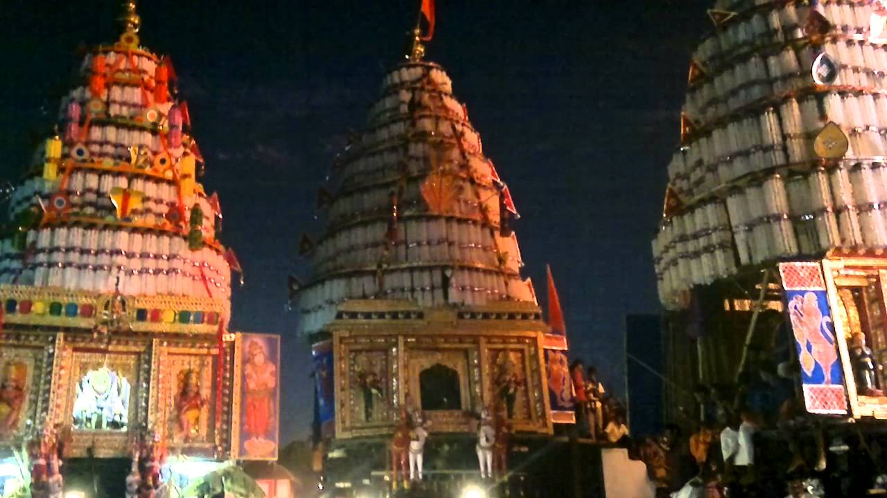
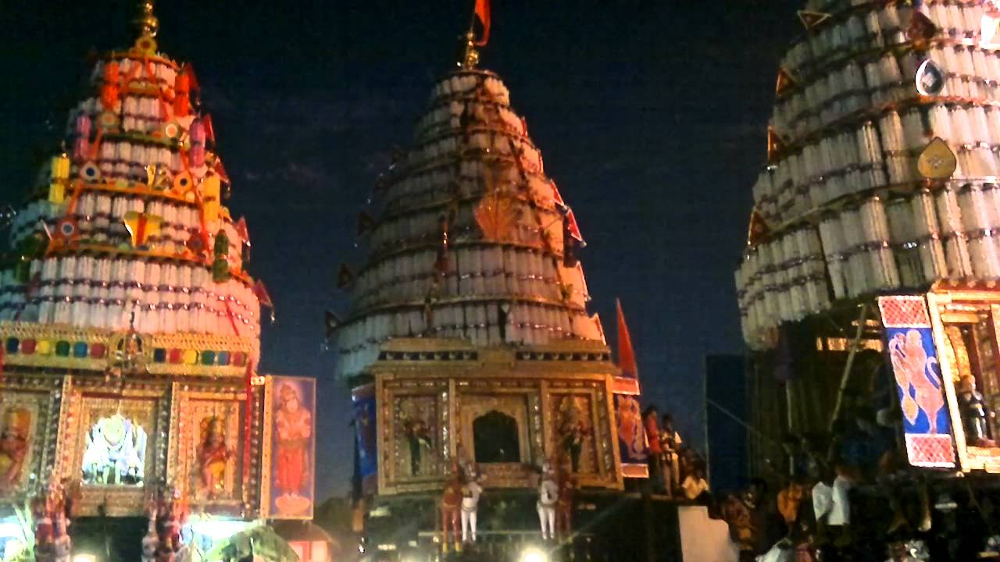
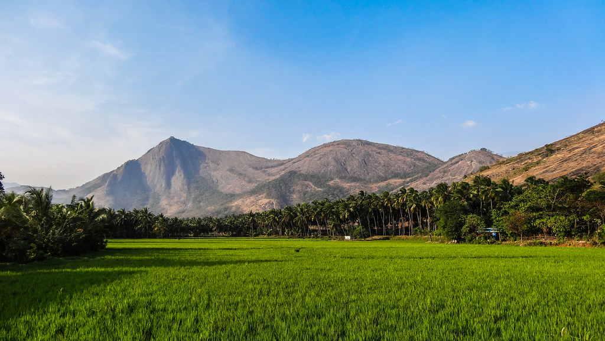
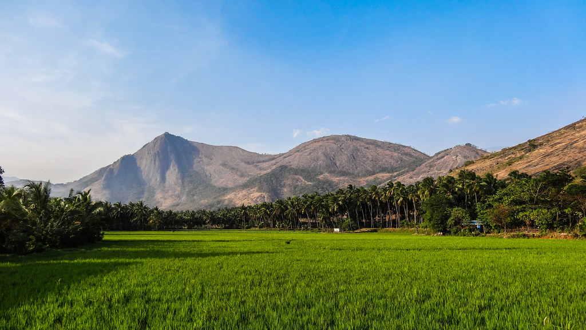
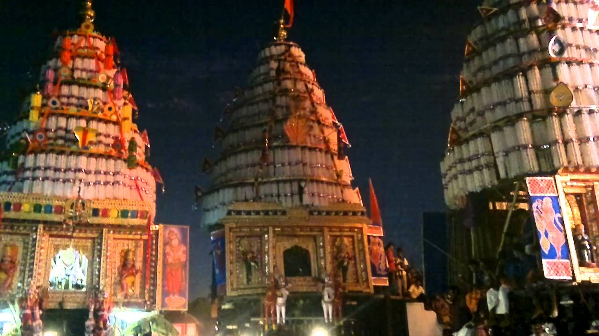
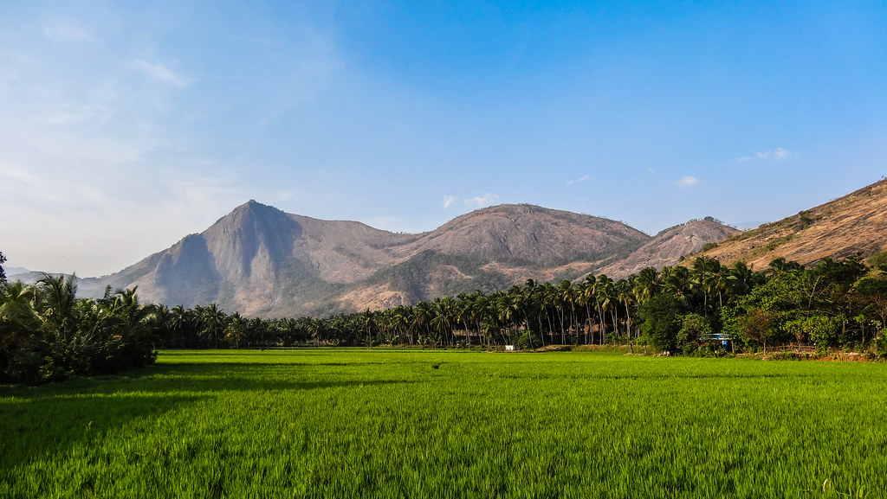

 

Palakkad is one of the fourteen districts of Kerala and has no coastal line. The district opens the state to the rest of the country through the Palakkad Gap with a width of 32 to 40 Kms. Its geographical position, historical background, educational status, tourism hot-spots and above all, the development activities that are carried out, are wide and varied. The district is one of the main granaries of Kerala and its economy is primarily agricultural. The district is also the land of Palmyrahs.Palakkad is also known as the rice bowl of Kerala. The 18th-century Palakkad Fort has sturdy battlements, a moat, and a Hanuman temple on its grounds. North on the Kalpathy River, the 15th-century Viswanatha Swamy Temple is the main venue of the Ratholsavam chariot festival. Northeast, near Malampuzha Dam, the town of Malampuzha has a rock garden created from recycled materials. The river Bharathappuzha flows through Palakkad. Palakkad is located on the northern bank of Bharathappuzha River.

